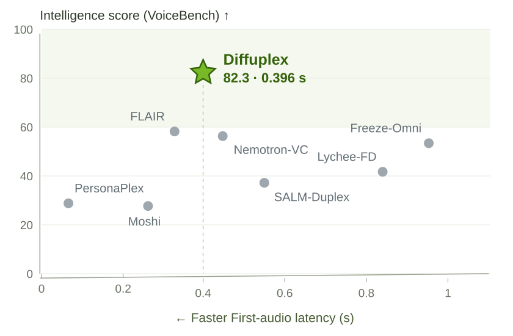

the decode throughput of the fastest baseline shown
1,872 tokens/s
Decode throughput · GB300
86.9
VoiceBench intelligence score
ModelDecode throughput (tokens/s) →VoiceBench
★Diffuplex
1,872
86.9
Phi-4MMFP8
481.7
64.3
N3-OmniFP8
393.6
89.4
Qwen2-AFP8
344.2
55.8
BR-VoiceBF16
327.3
90.46
Q3-Omni-TFP8
300.5
88.8
KimiBF16
293.3
76.9
MiniCPM-oBF16
289.2
71.2
Baichuan-1.5BF16
281.3
71.3
LFG-1BF16
254.2
79.6
GLM4-VBF16
214.0
56.5
LFG-3BF16
74.0
89.9
05001,0001,5002,000
GB300 · Fastest supplied configuration per baseline · Precision as indicatedVoiceBench: higher is better
02 / THINKING OFF · FULL-DUPLEX
Fast to respond. Strong spoken intelligence.
0.396 s
First-audio latency · Fisher policy
82.3
VoiceBench intelligence score
+22.3 points over FLAIR, the highest-scoring full-duplex baseline in this comparison.

Higher is smarter. Further left is faster.
From response modeling to full duplex.
VoiceBench: 86.9 with thinking, 84.1 without thinking at the end of Stage 2, and 82.3 after full-duplex adaptation. The Fisher policy improves response timing while retaining the same full-duplex intelligence score.